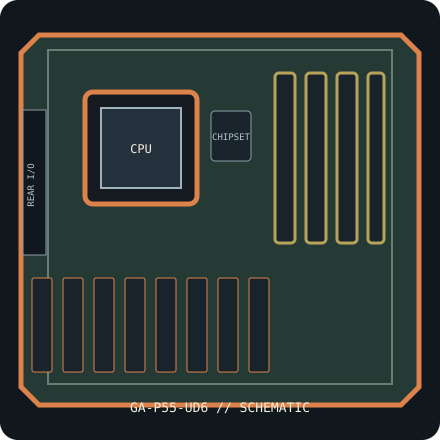

[ INDIVIDUAL COMPONENT // SYSTEM BOARD ]
GIGABYTE GA-P55-UD6 (rev. 1.0)
Intel P55 / LGA1156 ATX platform, 2009. Exact rev. 1.0; six DDR3 DIMMs, SATA 6 Gb/s and CPU/BIOS support list. This record identifies one exact SKU/revision; verify the silkscreened board marking before firmware or component selection.

IDENTIFICATION: This entry is for GA-P55-UD6, PCB revision 1.0. Similar family names, chipset stepping and board revisions may use incompatible BIOS, layouts or connectors.
Specifications & compatibility
| Exact board / PCB revision | GA-P55-UD6 — PCB revision 1.0 |
|---|---|
| Platform / socket / chipset | 2009 Intel desktop platform; LGA1156; Intel P55 Express |
| CPU compatibility | LGA1156 Intel Core i7/Core i5 models and other CPUs only as listed for GA-P55-UD6 rev. 1.0; verify processor stepping and minimum BIOS. Do not substitute LGA1155 or LGA1150 chips. |
| Form factor / dimensions | ATX, 305 × 244 mm |
| Memory | Six DDR3 DIMM sockets, dual-channel, up to 16 GB non-ECC unbuffered DDR3; populated slots/ranks and CPU memory controller govern validated speed. |
| Expansion | Three PCIe 2.0 x16-length slots (x16, x8 and x4 electrical), two PCIe x1 and two PCI slots. |
| Storage | Six Intel P55 SATA 3 Gb/s ports, two rear eSATA 3 Gb/s ports via the GIGABYTE SATA2 controller, and one IDE connector. |
| External I/O | Rear PS/2, optical/coaxial S/PDIF, six USB 2.0/eSATA combo ports, two IEEE 1394a, dual Gigabit Ethernet and 8-channel audio; consult manual for connector map. |
| BIOS / firmware support | DualBIOS and Q-Flash. Use the GA-P55-UD6 rev. 1.0 BIOS branch and check its processor support table for minimum BIOS; firmware from UD6 revisions or similarly named P55 boards is unsafe. |
| PSU / case compatibility | ATX case fitting the 305 × 244 mm board, full-size cards and standoffs. Supply 24-pin main and 8-pin CPU 12 V connectors; connect any auxiliary PCIe power header as instructed for expansion-card configurations. |
Installation and service notes
Confirm the exact CPU, minimum BIOS, DIMM type/capacity and supported slot/port mapping in the board-specific vendor support documents before purchase or installation. Socket fit is not proof of processor support; similarly named board firmware must not be cross-flashed.
Use ESD-safe handling, inspect the board for socket damage, leakage and corrosion, and keep loose screws or conductive debris away from the PCB. Check the case standoffs, PSU leads and cooler clearance against the manual before first power-on.
Manufacturer and manual sources
- GIGABYTE GA-P55-UD6 rev. 1.0 specificationsOfficial manufacturer specification entry for this model.
- GIGABYTE GA-P55-UD6 user manual (official PDF)Official manufacturer manual or revision-specific downloads for installation, CPU compatibility and BIOS support.
Specifications are archived for identification, not a guarantee that an aged board or used component is functional. Use the exact-revision vendor materials for final compatibility decisions.